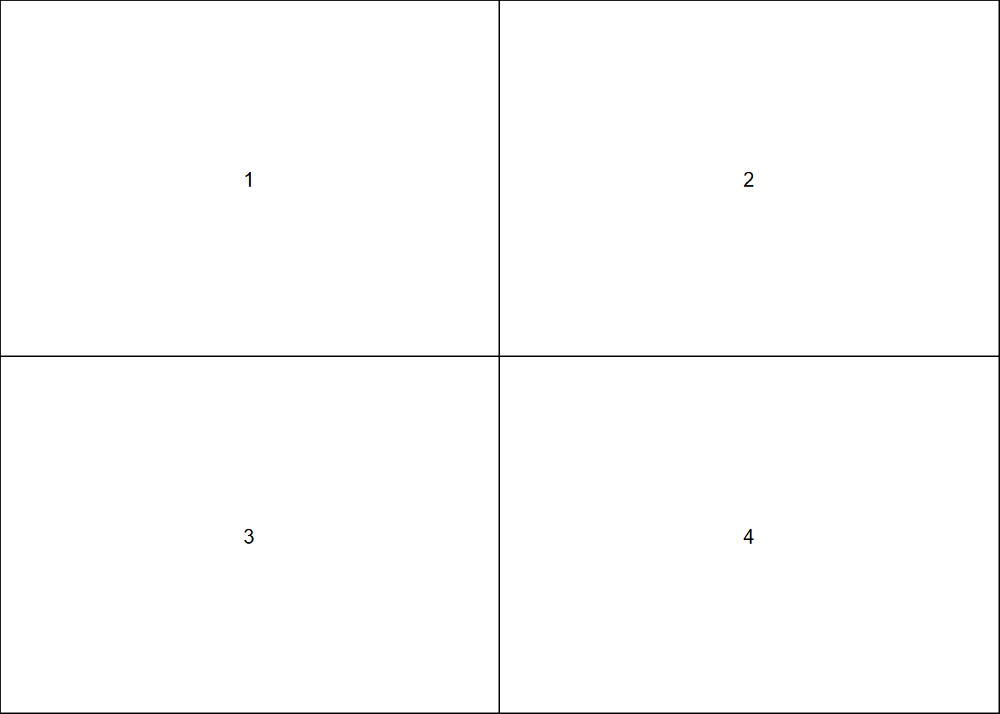

Punto 4
Generar un conjunto de datos simulados de dos clases con 100 observaciones y dos características en las que hay una separación visible pero no lineal entre las dos clases. Muestra que, en este escenario, un vector de apoyo máquina con un núcleo polinómico (con un grado superior a 1) o una El núcleo radial superará al clasificador de vectores de apoyo en la formación datos. ¿Qué técnica funciona mejor con los datos de la prueba? Haga y reportar las tasas de error de entrenamiento y pruebas para respaldar sus afirmaciones.
library(e1071)
set.seed(2653)
x <- rnorm(100)
y <- 4 * x^2 + 1 + rnorm(100)
class <- sample(100, 50)
y[class] <- y[class] + 3
y[-class] <- y[-class] - 3
plot(x[class], y[class], col = "#FF7B4D", xlab = "X", ylab = "Y", ylim = c(-6, 30))
points(x[-class], y[-class], col = "#4D90FF")Ajustamos un clasificador de vector de soporte para los datos de entrenamiento:
set.seed(2020)
z <- rep(-1, 100)
z[class] <- 1
data <- data.frame(x = x, y = y, z = as.factor(z))
train4 <- sample(100, 50)
data.train4 <- data[train4, ]
data.test4 <- data[-train4, ]
svm.linear <- svm(z ~ ., data = data.train4, kernel = "linear", cost = 10)
plot(svm.linear, data.train4, col=c("#89D7FF","#5A6EEB"))table(predict = predict(svm.linear, data.train4), truth = data.train4$z)## truth
## predict -1 1
## -1 18 3
## 1 5 24El clasificador de vectores de soporte comete 8 errores de clasificación.
Se ajusta una maquina de vectores con núcleo polinomial de grado 3:
svm.poly <- svm(z ~ ., data = data.train4, kernel = "polynomial", cost = 10)
plot(svm.poly, data.train4, col=c("#89D7FF","#5A6EEB"))table(predict = predict(svm.poly, data.train4), truth = data.train4$z)## truth
## predict -1 1
## -1 16 1
## 1 7 26La máquina de vectores de soporte con un núcleo polinomial comete 8 errores en los datos de entrenamiento.
Se ajusta una máquina de vectores de soporte con núcleo radial y gamma de 4:
svm.radial <- svm(z ~ ., data = data.train4, kernel = "radial", gamma = 4, cost = 10)
plot(svm.radial, data.train4, col=c("#89D7FF","#5A6EEB"))
table(predict = predict(svm.radial, data.train4), truth = data.train4$z)## truth
## predict -1 1
## -1 23 0
## 1 0 27La máquina de vectores con núcleo radial no comete errores.
Luego, se verifica el funcionamiento de estos modelos con los datos de prueba.
plot(svm.linear, data.test4,col=c("#00EBAE","#0DB5FF"))
table(predict = predict(svm.linear, data.test4), truth = data.test4$z)## truth
## predict -1 1
## -1 20 0
## 1 7 23Comete 7 errores de clasificación.
plot(svm.poly, data.test4,col=c("#00EBAE","#0DB5FF"))table(predict = predict(svm.poly, data.test4), truth = data.test4$z)## truth
## predict -1 1
## -1 13 0
## 1 14 23Comete 14 errores de clasificación.
plot(svm.radial, data.test4,col=c("#00EBAE","#0DB5FF"))table(predict = predict(svm.radial, data.test4), truth = data.test4$z)## truth
## predict -1 1
## -1 27 2
## 1 0 21Comete 2 errores de clasificación.
En este caso el mejor modelo se ajusta con el núcleo radial.
Punto 5
Hemos visto que podemos encajar un SVM con un núcleo no lineal para para realizar la clasificación utilizando un límite de decisión no lineal ahora vemos que también podemos obtener un límite de decisión no lineal por realizando una regresión logística utilizando transformaciones no lineales de las características.
(a) Generar un conjunto de datos con n = 500 y p = 2, de manera que las observaciones pertenecen a dos clases con un límite de decisión cuadrático entre ellos. Por ejemplo, puedes hacer esto de la siguiente manera:
x1=runif (500) -0.5 x2=runif (500) -0.5 y=1*(x12-x22 > 0)
set.seed(130)
x1 <- runif(500) - 0.5
x2 <- runif(500) - 0.5
y <- 1 * (x1^2 - x2^2 > 0)(b) Trazar las observaciones, coloreadas según sus etiquetas de clase. Su gráfico debe mostrar X1 en el eje x, y X2 en el eje y.
plot(x1, x2, xlab = "X1", ylab = "X2", col = (4 - y), pch = (3 - y))(c) Ajustar un modelo de regresión logística a los datos, utilizando X1 y X2 como predictores.
Ajustamos el modelo:
logit.fit1 <- glm(y ~ x1 + x2, family = "binomial")
summary(logit.fit1)##
## Call:
## glm(formula = y ~ x1 + x2, family = "binomial")
##
## Deviance Residuals:
## Min 1Q Median 3Q Max
## -1.280 -1.152 -1.038 1.179 1.333
##
## Coefficients:
## Estimate Std. Error z value Pr(>|z|)
## (Intercept) -0.05766 0.08986 -0.642 0.521
## x1 -0.42417 0.30512 -1.390 0.164
## x2 -0.27181 0.30183 -0.901 0.368
##
## (Dispersion parameter for binomial family taken to be 1)
##
## Null deviance: 692.64 on 499 degrees of freedom
## Residual deviance: 690.02 on 497 degrees of freedom
## AIC: 696.02
##
## Number of Fisher Scoring iterations: 3En este modelo ajustado ninguna de las variables es significativa.
(d) Aplicar este modelo a los datos de capacitación a fin de obtener una predicción etiqueta de clase para cada observación de entrenamiento. Traza las observaciones, de acuerdo con las etiquetas de clase predichas. El límite de decisión debe ser lineal.
data1 <- data.frame(x1 = x1, x2 = x2, y = y)
probs1 <- predict(logit.fit1, data1, type = "response")
preds1 <- rep(0, 500)
preds1[probs1 > 0.47] <- 1
plot(data1[preds1 == 1, ]$x1, data1[preds1 == 1, ]$x2, col = (4 - 1), pch = (3 - 1), xlab = "X1", ylab = "X2")
points(data1[preds1 == 0, ]$x1, data1[preds1 == 0, ]$x2, col = (4 - 0), pch = (3 - 0))Para este caso el límite de decisión sería lineal.
(e) Ahora ajuste un modelo de regresión logística a los datos utilizando la técnica no lineal funciones de X1 y X2 como predictores (por ejemplo \(X_1^2,X_1 * X_2\),log(\(X_2\)), etc)
logitnl.fit <- glm(y ~ poly(x1, 2) + log(abs(x2)) + I(x1 * x2), family = "binomial")## Warning: glm.fit: fitted probabilities numerically 0 or 1 occurredsummary(logitnl.fit)##
## Call:
## glm(formula = y ~ poly(x1, 2) + log(abs(x2)) + I(x1 * x2), family = "binomial")
##
## Deviance Residuals:
## Min 1Q Median 3Q Max
## -2.70065 -0.13052 -0.01607 0.11021 2.07835
##
## Coefficients:
## Estimate Std. Error z value Pr(>|z|)
## (Intercept) -9.2966 1.0723 -8.670 <2e-16 ***
## poly(x1, 2)1 -0.4216 4.3107 -0.098 0.9221
## poly(x1, 2)2 88.0169 9.9538 8.843 <2e-16 ***
## log(abs(x2)) -6.1119 0.6976 -8.762 <2e-16 ***
## I(x1 * x2) -3.2041 1.8025 -1.778 0.0755 .
## ---
## Signif. codes: 0 '***' 0.001 '**' 0.01 '*' 0.05 '.' 0.1 ' ' 1
##
## (Dispersion parameter for binomial family taken to be 1)
##
## Null deviance: 692.64 on 499 degrees of freedom
## Residual deviance: 167.67 on 495 degrees of freedom
## AIC: 177.67
##
## Number of Fisher Scoring iterations: 8Con este nuevo modelo no linealtenemos dos variables o transformaciones significativas, \(X_2\) y log(\(X_2\)).
(f) Aplicar este modelo a los datos de entrenamiento para obtener una predicción etiqueta de clase para cada observación de entrenamiento. Traza las observaciones, de acuerdo con las etiquetas de clase predichas. El límite de decisión debería ser obviamente no lineal. Si no lo es, entonces repita (a)-(e) hasta que llegue a un ejemplo en el que las etiquetas de clase predichas son obviamente no lineales.
probs6 <- predict(logitnl.fit, data1, type = "response")
preds6 <- rep(0, 500)
preds6[probs6 > 0.47] <- 1
plot(data1[preds6 == 1, ]$x1, data1[preds6 == 1, ]$x2, col = (4 - 1), pch = (3 - 1), xlab = "X1", ylab = "X2")
points(data1[preds6 == 0, ]$x1, data1[preds6 == 0, ]$x2, col = (4 - 0), pch = (3 - 0))El límite de decisíon es no lineal.
(g) Ajustar un clasificador de vectores de apoyo a los datos con X1 y X2 como predictores. Obtener una predicción de clase para cada observación de entrenamiento. Trazar las observaciones, coloreadas de acuerdo con la predicción etiquetas de clase.
data1$y <- as.factor(data1$y)
svm.fit7 <- svm(y ~ x1 + x2, data1, kernel = "linear", cost = 0.05)
preds7 <- predict(svm.fit7, data1)
plot(data1[preds7 == 0, ]$x1, data1[preds7 == 0, ]$x2, col = (4 - 0), pch = (3 - 0), xlab = "X1", ylab = "X2")
points(data1[preds7 == 1, ]$x1, data1[preds7 == 1, ]$x2, col = (4 - 1), pch = (3 - 1))(h) Ajustar un SVM usando un núcleo no lineal a los datos. Obtener una clase predicción para cada observación de entrenamiento. Traza las observaciones, de acuerdo con las etiquetas de clase predichas.
data1$y <- as.factor(data1$y)
svmnl.fit8 <- svm(y ~ x1 + x2, data1, kernel = "radial", gamma = 1)
preds8 <- predict(svmnl.fit8, data1)
plot(data1[preds8 == 0, ]$x1, data1[preds8 == 0, ]$x2, col = (4 - 0), pch = (3 - 0), xlab = "X1", ylab = "X2")
points(data1[preds8 == 1, ]$x1, data1[preds8 == 1, ]$x2, col = (4 - 1), pch = (3 - 1))De nuevo el límite de decisión no es lineal.
(i) Comente sus resultados.
Podemos concluir que SVM con kernel no lineal y regresión logística con términos de interacción son igualmente muy poderosos para encontrar límites de decisión no lineales. Además, algo a favor de SVM es que requiere un poco de ajuste manual para encontrar los términos de interacción correctos cuando se usa la regresión logística, aunque cuando se usa SVM solo se necesita encontrar un buen gamma.
Punto 6
Al final de la sección 9.6.1, se afirma que en el caso de los datos que es apenas linealmente separable, un clasificador de vectores de apoyo con un pequeño valor de costo que clasifica erróneamente un par de observaciones de entrenamiento puede tener un mejor rendimiento en los datos de las pruebas que uno con un enorme valor de costo que no clasifica erróneamente ninguna observación de entrenamiento. Ahora investigue esta demanda.
(a) Generar datos de dos clases con p = 2 de tal manera que las clases son apenas linealmente separables.
set.seed(145)
x.one <- runif(500, 0, 90)
y.one <- runif(500, x.one + 10, 100)
x.one.noise <- runif(50, 20, 80)
y.one.noise <- 5/4 * (x.one.noise - 10) + 0.1
x.zero <- runif(500, 10, 100)
y.zero <- runif(500, 0, x.zero - 10)
x.zero.noise <- runif(50, 20, 80)
y.zero.noise <- 5/4 * (x.zero.noise - 10) - 0.1
class.one <- seq(1, 550)
x <- c(x.one, x.one.noise, x.zero, x.zero.noise)
y1 <- c(y.one, y.one.noise, y.zero, y.zero.noise)
plot(x[class.one], y1[class.one], col = "blue", pch = "+", ylim = c(0, 100))
points(x[-class.one], y1[-class.one], col = "red", pch = 4)(b) Calcular las tasas de error de validación cruzada para el vector de apoyo clasificadores con un rango de valores de costo. ¿Cuántos errores de entrenamiento se clasifican erróneamente para cada valor de costo considerado, y cómo se relaciona esto con los errores de validación cruzada obtenidos?
set.seed(231)
z <- rep(0, 1100)
z[class.one] <- 1
data <- data.frame(x = x, y = y1, z = as.factor(z))
tune.out <- tune(svm, z ~ ., data = data, kernel = "linear", ranges = list(cost = c(0.01, 0.1, 1, 5, 10, 100, 1000, 10000)))
summary(tune.out)##
## Parameter tuning of 'svm':
##
## - sampling method: 10-fold cross validation
##
## - best parameters:
## cost
## 10000
##
## - best performance: 0
##
## - Detailed performance results:
## cost error dispersion
## 1 1e-02 0.04818182 0.018704605
## 2 1e-01 0.04000000 0.016148985
## 3 1e+00 0.04000000 0.014968593
## 4 5e+00 0.04000000 0.014968593
## 5 1e+01 0.04000000 0.016148985
## 6 1e+02 0.03818182 0.015332255
## 7 1e+03 0.01818182 0.008570991
## 8 1e+04 0.00000000 0.000000000data.frame(cost = tune.out$performance$cost, misclass = tune.out$performance$error * 1100)## cost misclass
## 1 1e-02 53
## 2 1e-01 44
## 3 1e+00 44
## 4 5e+00 44
## 5 1e+01 44
## 6 1e+02 42
## 7 1e+03 20
## 8 1e+04 0El mejor parámetro puede ser el que se obtiene 10000 puesto que no comete errores al clasificar los punto.
(c) Generar un conjunto de datos de prueba apropiado, y calcular la prueba errores correspondientes a cada uno de los valores de costo considerados. ¿Qué valor de coste conduce a la menor cantidad de errores de prueba, y cómo ¿se compara esto con los valores de costo que producen menos errores de entrenamiento y la menor cantidad de errores de validación cruzada?
x.test <- runif(1000, 0, 100)
class.one <- sample(1000, 500)
y.test <- rep(NA, 1000)
# Set y > x for class.one
for (i in class.one) {
y.test[i] <- runif(1, x.test[i], 100)
}
# set y < x for class.zero
for (i in setdiff(1:1000, class.one)) {
y.test[i] <- runif(1, 0, x.test[i])
}
plot(x.test[class.one], y.test[class.one], col = "blue", pch = "+")
points(x.test[-class.one], y.test[-class.one], col = "red", pch = 4)set.seed(3)
z.test <- rep(0, 1000)
z.test[class.one] <- 1
data.test <- data.frame(x = x.test, y = y.test, z = as.factor(z.test))
costs <- c(0.01, 0.1, 1, 5, 10, 100, 1000, 10000)
test.err <- rep(NA, length(costs))
for (i in 1:length(costs)) {
svm.fit <- svm(z ~ ., data = data, kernel = "linear", cost = costs[i])
pred <- predict(svm.fit, data.test)
test.err[i] <- sum(pred != data.test$z)
}
data.frame(cost = costs, misclass = test.err)## cost misclass
## 1 1e-02 43
## 2 1e-01 12
## 3 1e+00 8
## 4 5e+00 8
## 5 1e+01 7
## 6 1e+02 167
## 7 1e+03 203
## 8 1e+04 204Para este caso el mejor costo se da en 10.
(d) Discuta sus resultados.
Para un valor de costo alto intenta clasificar correctamente pero en esta caso funciona mejor un costo bajo y tener pocos errores.
Punto 7
En este problema, se utilizarán los enfoques de los vectores de apoyo a fin de predecir si un coche determinado tiene un alto o bajo kilometraje de gasolina basado en la Conjunto de datos automático.
(a) Crear una variable binaria que toma un 1 para los coches con gasolina el kilometraje por encima de la mediana, y un 0 para los coches con kilometraje de gasolina por debajo de la media.
library(ISLR)
cuan <- quantile(Auto$mpg)
per50 <- cuan[3]
new_auto <- Auto
new_auto["Y"] <- rep(0, 392)
for(i in 1:392){
if(new_auto$mpg[i]>per50){
new_auto$Y[i] = 1
}else{
new_auto$Y[i] = 0
}
}(b) Ajustar un clasificador de vectores de apoyo a los datos con diversos valores del costo, para predecir si un coche tiene alta o baja gasolina kilometraje. Reporte los errores de validación cruzada asociados con diferentes valores de este parámetro. Comente sus resultados.
El parámetro costo(C) controla el balence entre sesgo y varianza del clasificador, si C = 0, ninguna observación viola la margen, si C > 0 a lo sumo C observaciones pueden violar la margen. Por lo tanto si C amuenta entonces la margen se amplía y si C disminuye se angosta la margen lo cual disminuye el sesgo, pero hay mayor variabiliad, por lo tanto se busca un C optimo. Para la busquedda de este hiperparámetro se usara Cross-validation k-folds con k=10.
library(e1071)
library(ggplot2)
#Usando cross validation K-folds con k=10
set.seed(123356)
tune.cost <- tune(svm ,as.factor(Y)~.,data=new_auto ,kernel ="linear",
ranges =list(cost=c(0.001,0.01,0.1, 1,2,5,10,50)))
summary(tune.cost$best.model)##
## Call:
## best.tune(method = svm, train.x = as.factor(Y) ~ ., data = new_auto,
## ranges = list(cost = c(0.001, 0.01, 0.1, 1, 2, 5, 10, 50)),
## kernel = "linear")
##
##
## Parameters:
## SVM-Type: C-classification
## SVM-Kernel: linear
## cost: 1
##
## Number of Support Vectors: 56
##
## ( 26 30 )
##
##
## Number of Classes: 2
##
## Levels:
## 0 1ggplot(data = tune.cost$performances, aes(x = cost, y = error)) +
geom_line() +
geom_point() +
labs(title = "Error de validación ~ hiperparámetro C") +
theme_bw() +
theme(plot.title = element_text(hjust = 0.2))Vemos que la menor tasa error de clasificación usando cross-validation se da cuando el cost = 1, es decir, solo se permite a lo sumo una observación dentro de las margenes. Al no ser grande el valor de este hiperparámetro tenemos disminución del sesgo pero aumenta la variabilidad.
(c) Ahora repita (b), esta vez usando SVM con radial y polinomio con diferentes valores de gamma y grado y costo. Comente sus resultados.
# Kernel radial
set.seed(154699)
tune.costR <- tune(svm, as.factor(Y)~.,data=new_auto ,kernel ="radial",
ranges =list(cost=c(0.001,0.01,0.1, 1,5),
gamma=c(0.01,0.1,1,5,10)))
summary(tune.costR$best.model)##
## Call:
## best.tune(method = svm, train.x = as.factor(Y) ~ ., data = new_auto,
## ranges = list(cost = c(0.001, 0.01, 0.1, 1, 5), gamma = c(0.01,
## 0.1, 1, 5, 10)), kernel = "radial")
##
##
## Parameters:
## SVM-Type: C-classification
## SVM-Kernel: radial
## cost: 5
##
## Number of Support Vectors: 86
##
## ( 48 38 )
##
##
## Number of Classes: 2
##
## Levels:
## 0 1ggplot(data = tune.costR$performances,
aes(x = cost, y = error, col = as.factor(gamma))) +
geom_line() +
geom_point() +
labs(title = "Error de validación ~ hiperparámetro C y gamma") +
theme(plot.title = element_text(hjust = 0.5)) +
theme_bw() + theme(legend.position = "bottom")Vemos que la menor tasa de clasificación usando cross-valitadion es cuando el vector de hiperpáramtres cost y gamma es (5, 0.1). También se observa en el gráfico que para un valor de gamma igual o mayor a 5 la tasa de error de clasificación no varia demasiado.
# Kernel polinomiales
set.seed(123564)
tune.costP <- tune(svm,as.factor(Y)~.,data=new_auto ,kernel ="polynomial",
ranges =list(cost=c(0.001,0.01,0.1, 1,5),
degree=c(1,2,4,3,5)))
summary(tune.costP$best.model)##
## Call:
## best.tune(method = svm, train.x = as.factor(Y) ~ ., data = new_auto,
## ranges = list(cost = c(0.001, 0.01, 0.1, 1, 5), degree = c(1,
## 2, 4, 3, 5)), kernel = "polynomial")
##
##
## Parameters:
## SVM-Type: C-classification
## SVM-Kernel: polynomial
## cost: 5
## degree: 1
## coef.0: 0
##
## Number of Support Vectors: 132
##
## ( 64 68 )
##
##
## Number of Classes: 2
##
## Levels:
## 0 1ggplot(data = tune.costP$performances,
aes(x = cost, y = error, col = as.factor(degree))) +
geom_line() +
geom_point() +
labs(title = "Error de validación ~ hiperparámetro C y polinomio") +
theme(plot.title = element_text(hjust = 0.5)) +
theme_bw() + theme(legend.position = "bottom")Vemos que la menor tasa de clasificación usando cross-valitadion es cuando el vector de hiperpáramtres cost y dregree es (1, 5). También se observa que para un grado de polinomio mayor o igual que 2 no se observa que la tasa del error varie, por lo tanto para este problema se recomienda utilizar un kernel lineal.
(d) Haga algunas tramas para respaldar sus afirmaciones en (b) y (c). Sugerencia: En el laboratorio, usamos la función plot() para los objetos svm sólo en los casos con p = 2. Cuando p > 2, puedes usar la gráfica() para crear gráficos que muestren pares de variables a la vez. Esencialmente, en lugar de escribir
trama(svmfit , dat) donde svmfit contiene su modelo ajustado y dat es un marco de datos que contiene sus datos, puede escribir
trama(svmfit , dat , x1???x4) con el fin de trazar sólo la primera y cuarta variables. Sin embargo, usted debe reemplazar x1 y x4 con los nombres correctos de las variables. Para encontrar más, escriba plot.svm.
library(caret)set.seed(78954)
t_1 <- createDataPartition(y = new_auto$Y, p=0.75, list=FALSE, times = 1)
train <- new_auto[t_1, ]
test <- new_auto[-t_1,]
svm.fit <- svm(as.factor(Y)~.,data=train, type="C-classification",
kernel ="linear", cost=1)
summary(svm.fit)##
## Call:
## svm(formula = as.factor(Y) ~ ., data = train, type = "C-classification",
## kernel = "linear", cost = 1)
##
##
## Parameters:
## SVM-Type: C-classification
## SVM-Kernel: linear
## cost: 1
##
## Number of Support Vectors: 49
##
## ( 26 23 )
##
##
## Number of Classes: 2
##
## Levels:
## 0 1nf <- layout(matrix(c(1:4),2,2, byrow = TRUE),respect=TRUE)
plot(svm.fit,test, mpg~displacement)plot(svm.fit,test, mpg~acceleration)plot(svm.fit,test, mpg~weight)plot(svm.fit,test, weight~displacement)layout.show(nf)
pred_lineal <- predict(svm.fit, test[, -10])
tb_l = table(real=test$Y, prediccion=pred_lineal)
cat("Matriz de confusión \n")## Matriz de confusiónaddmargins(tb_l)## prediccion
## real 0 1 Sum
## 0 48 1 49
## 1 0 49 49
## Sum 48 50 98Kernel Radial:
svm.fitR <- svm(as.factor(Y)~.,data=train ,kernel ="radial",
type="C-classification",cost=5,gamma=0.1)
summary(svm.fitR)##
## Call:
## svm(formula = as.factor(Y) ~ ., data = train, kernel = "radial",
## type = "C-classification", cost = 5, gamma = 0.1)
##
##
## Parameters:
## SVM-Type: C-classification
## SVM-Kernel: radial
## cost: 5
##
## Number of Support Vectors: 73
##
## ( 40 33 )
##
##
## Number of Classes: 2
##
## Levels:
## 0 1plot(svm.fitR,test, mpg~displacement)plot(svm.fitR,test, mpg~acceleration)plot(svm.fitR,test, mpg~weight)
plot(svm.fitR,test, weight~displacement)pred_radial <- predict(svm.fitR, test[, -10])
tb_r = table(real=test$Y, prediccion=pred_radial)
cat("Matriz de confusión \n")## Matriz de confusiónaddmargins(tb_r)## prediccion
## real 0 1 Sum
## 0 48 1 49
## 1 0 49 49
## Sum 48 50 98Kernel Polinomial:
svm.fitP <- svm(as.factor(Y)~.,data=train ,kernel ="polynomial", type="C-classification",
cost=5,degree=1)
summary(svm.fitP)##
## Call:
## svm(formula = as.factor(Y) ~ ., data = train, kernel = "polynomial",
## type = "C-classification", cost = 5, degree = 1)
##
##
## Parameters:
## SVM-Type: C-classification
## SVM-Kernel: polynomial
## cost: 5
## degree: 1
## coef.0: 0
##
## Number of Support Vectors: 106
##
## ( 53 53 )
##
##
## Number of Classes: 2
##
## Levels:
## 0 1plot(svm.fitP,test, mpg~displacement)plot(svm.fitP,test, mpg~acceleration)
plot(svm.fitP,test, mpg~weight)
plot(svm.fitP,test, weight~displacement)# error de entrenamiento
#matriz de confusión
pred_poly <- predict(svm.fitP, test[, -10])
tb_p = table(real=test$Y, prediccion=pred_poly)
cat("Matriz de confusión \n")## Matriz de confusiónaddmargins(tb_p)## prediccion
## real 0 1 Sum
## 0 40 9 49
## 1 1 48 49
## Sum 41 57 98Luego de los resultados obtenidos anteriormente, los modelos que mejor se comportan son usando Kernel Lineal y radial, ya que, la tasa de error de clasificación para estos fue el mismo, otro resultado importante fue que usando kernel polinomial el mejor resultado se obtuvo con un polinomio de grado 1.
Punto 8
Este problema involucra el conjunto de datos del OJ que es parte del ISLR paquete.
(a) Cree un conjunto de entrenamiento que contenga una muestra aleatoria de 800 observaciones y un conjunto de prueba que contenga las observaciones restantes.
set.seed(6)
train8 <- sample(nrow(OJ), 800)
OJ.train8 <- OJ[train8, ]
OJ.test8 <- OJ[-train8, ](b) Ajuste un clasificador de vector de soporte a los datos de entrenamiento usando cost = 0.01, con Purchase como respuesta y las otras variables como predictores. Use la función summary() para generar estadísticas resumidas y describir los resultados obtenidos.
svm.linear8 <- svm(Purchase ~ ., data = OJ.train8, kernel = "linear", cost = 0.01)
summary(svm.linear8)##
## Call:
## svm(formula = Purchase ~ ., data = OJ.train8, kernel = "linear",
## cost = 0.01)
##
##
## Parameters:
## SVM-Type: C-classification
## SVM-Kernel: linear
## cost: 0.01
##
## Number of Support Vectors: 449
##
## ( 225 224 )
##
##
## Number of Classes: 2
##
## Levels:
## CH MMEl clasificador de vectores de soporte crea 449 vectores de soporte de 800 puntos de entrenamiento. De estos, 225 pertenecen al nivel CH y los 224 restantes pertenecen al nivel MM.
(c) ¿Cuáles son las tasas de error de entrenamiento y prueba?
Matriz de confusión para los datos de entrenamiento:
train.pred8 <- predict(svm.linear8, OJ.train8)
table(OJ.train8$Purchase, train.pred8)## train.pred8
## CH MM
## CH 413 65
## MM 83 239((83+65)/(413+65+83+239))## [1] 0.185Matriz de confusión para los datos de prueba:
test.pred8 <- predict(svm.linear8, OJ.test8)
table(OJ.test8$Purchase, test.pred8)## test.pred8
## CH MM
## CH 158 17
## MM 14 81((14+17)/(158+17+14+81))## [1] 0.1148148La tasa de error de entrenamiento es de 18.5% y la tasa de error de prueba es de aproximadamente 11.48%.
(d) Use la función tune() para seleccionar un cost óptimo. Considere valores en el rango de 0.01 a 10.
set.seed(7)
tune.out8 <- tune(svm, Purchase ~ ., data = OJ.train8, kernel = "linear", ranges = list(cost = 10^seq(-2, 1, by = 0.25)))
summary(tune.out8)##
## Parameter tuning of 'svm':
##
## - sampling method: 10-fold cross validation
##
## - best parameters:
## cost
## 1.778279
##
## - best performance: 0.17875
##
## - Detailed performance results:
## cost error dispersion
## 1 0.01000000 0.19000 0.05027701
## 2 0.01778279 0.18875 0.04308019
## 3 0.03162278 0.18250 0.04684490
## 4 0.05623413 0.18250 0.04794383
## 5 0.10000000 0.18625 0.04767147
## 6 0.17782794 0.18625 0.04505013
## 7 0.31622777 0.18250 0.04495368
## 8 0.56234133 0.18375 0.04931827
## 9 1.00000000 0.18125 0.05179085
## 10 1.77827941 0.17875 0.04715886
## 11 3.16227766 0.18125 0.04535738
## 12 5.62341325 0.18375 0.04168749
## 13 10.00000000 0.18375 0.04084609El costo óptimo es de 1.778279.
(e) Calcule las tasas de error de entrenamiento y prueba utilizando este nuevo valor de cost.
svm.linear88 <- svm(Purchase ~ ., kernel = "linear", data = OJ.train8, cost = tune.out8$best.parameter$cost)Matriz de confusión para los datos de entrenamiento:
train.pred88 <- predict(svm.linear88, OJ.train8)
table(OJ.train8$Purchase, train.pred88)## train.pred88
## CH MM
## CH 415 63
## MM 74 248(74 + 63) / (415+63+74+248)## [1] 0.17125Matriz de confusión para los datos de prueba:
test.pred88 <- predict(svm.linear88, OJ.test8)
table(OJ.test8$Purchase, test.pred88)## test.pred88
## CH MM
## CH 157 18
## MM 12 83(12 + 18) / (157+18+12+83)## [1] 0.1111111Usando un costo igual a 1.778279, la tasa de error de entrenamiento es de 17.125% y la tasa de error de prueba es de aproximadamente 11.11%. El valor encontrado para el costo óptimo redujo poco las tasas de error.
(f) Repita las partes (b) a (e) usando una máquina de vectores de soporte con un núcleo radial. Use el valor predeterminado para gamma.
svm.radial9 <- svm(Purchase ~ ., kernel = "radial", data = OJ.train8)
summary(svm.radial9)##
## Call:
## svm(formula = Purchase ~ ., data = OJ.train8, kernel = "radial")
##
##
## Parameters:
## SVM-Type: C-classification
## SVM-Kernel: radial
## cost: 1
##
## Number of Support Vectors: 388
##
## ( 195 193 )
##
##
## Number of Classes: 2
##
## Levels:
## CH MMEl nícleo radial con el valor de gamma predeterminado crea 338 vectores de soporte, de estos, 195 pertenecen al nivel CH y los 193 restantes pertenecen al nivel MM.
Matriz de confusión para los datos de entrenamiento:
train.pred9 <- predict(svm.radial9, OJ.train8)
table(OJ.train8$Purchase, train.pred9)## train.pred9
## CH MM
## CH 432 46
## MM 84 238(84+46) / (432+46+84+238)## [1] 0.1625Matriz de confusión para los datos de prueba:
test.pred9 <- predict(svm.radial9, OJ.test8)
table(OJ.test8$Purchase, test.pred9)## test.pred9
## CH MM
## CH 159 16
## MM 21 74(21+16) / (159+16+21+74)## [1] 0.137037El clasificador tiene un error de entrenamiento del 16.25% y un error de prueba del 13.704%, es una mejora respecto al núcleo lineal en el error de entrenamiento pero en el error de prueba aumentó ligeramente.
Se usa la función tune para encontrar el cost óptimo:
set.seed(25)
tune.out3 <- tune(svm, Purchase ~ ., data = OJ.train8, kernel = "radial", ranges = list(cost = 10^seq(-2,
1, by = 0.25)))
summary(tune.out3)##
## Parameter tuning of 'svm':
##
## - sampling method: 10-fold cross validation
##
## - best parameters:
## cost
## 1
##
## - best performance: 0.18625
##
## - Detailed performance results:
## cost error dispersion
## 1 0.01000000 0.40250 0.05263871
## 2 0.01778279 0.40250 0.05263871
## 3 0.03162278 0.33375 0.08820155
## 4 0.05623413 0.21000 0.05263871
## 5 0.10000000 0.19250 0.06129392
## 6 0.17782794 0.19000 0.05361903
## 7 0.31622777 0.18750 0.04677072
## 8 0.56234133 0.18750 0.04787136
## 9 1.00000000 0.18625 0.04980866
## 10 1.77827941 0.19375 0.04419417
## 11 3.16227766 0.19125 0.04715886
## 12 5.62341325 0.19750 0.04322101
## 13 10.00000000 0.19750 0.05096295svm.radial3 <- svm(Purchase ~ ., kernel = "radial", data = OJ.train8, cost = tune.out3$best.parameter$cost)
summary(svm.radial3)##
## Call:
## svm(formula = Purchase ~ ., data = OJ.train8, kernel = "radial",
## cost = tune.out3$best.parameter$cost)
##
##
## Parameters:
## SVM-Type: C-classification
## SVM-Kernel: radial
## cost: 1
##
## Number of Support Vectors: 388
##
## ( 195 193 )
##
##
## Number of Classes: 2
##
## Levels:
## CH MMEl costo óptimo encontrado fue de 1.
Matriz de confusión para los datos de entrenamiento:
train.pred3 <- predict(svm.radial3, OJ.train8)
table(OJ.train8$Purchase, train.pred3)## train.pred3
## CH MM
## CH 432 46
## MM 84 238(84+238)/(432+46+84+238)## [1] 0.4025Matriz de confusión para los datos de prueba:
test.pred3 <- predict(svm.radial3, OJ.test8)
table(OJ.test8$Purchase, test.pred3)## test.pred3
## CH MM
## CH 159 16
## MM 21 74(21+16)/(159+16+21+74)## [1] 0.137037Las tasas de error de entrenamiento y prueba fueron 40.25% y 13.704% respectivamente. El costo óptimo no reduce las tasas de error.
(g) Repita las partes (b) a (e) usando una máquina de vectores de soporte con un kernel polinomial. Use degree=2
svm.polypp <- svm(Purchase ~ ., kernel = "polynomial", data = OJ.train8, degree = 2)
summary(svm.polypp)##
## Call:
## svm(formula = Purchase ~ ., data = OJ.train8, kernel = "polynomial",
## degree = 2)
##
##
## Parameters:
## SVM-Type: C-classification
## SVM-Kernel: polynomial
## cost: 1
## degree: 2
## coef.0: 0
##
## Number of Support Vectors: 462
##
## ( 235 227 )
##
##
## Number of Classes: 2
##
## Levels:
## CH MMEl kernel polinómico de grados dos creea 462 vectores de soporte con 235 para CH y 227 para MM.
Matriz de confusión para los datos de entrenamiento:
train.predp <- predict(svm.polypp, OJ.train8)
table(OJ.train8$Purchase, train.predp)## train.predp
## CH MM
## CH 445 33
## MM 123 199(123+33)/(445+33+123+199)## [1] 0.195Matriz de confusión para los datos de prueba:
test.predp <- predict(svm.polypp, OJ.test8)
table(OJ.test8$Purchase, test.predp)## test.predp
## CH MM
## CH 159 16
## MM 33 62(33+16)/(159+16+33+62)## [1] 0.1814815Las tasas de error para los datos de entrenamiento y prueba son 19.5% y 18.15% respectivamente.
Ahora encontramos el valor óptimo para cost.
set.seed(75)
tune.out16 <- tune(svm, Purchase ~ ., data = OJ.train8, kernel = "polynomial", degree = 2, ranges = list(cost = 10^seq(-2,
1, by = 0.25)))
summary(tune.out16)##
## Parameter tuning of 'svm':
##
## - sampling method: 10-fold cross validation
##
## - best parameters:
## cost
## 5.623413
##
## - best performance: 0.1925
##
## - Detailed performance results:
## cost error dispersion
## 1 0.01000000 0.40125 0.06331414
## 2 0.01778279 0.38125 0.06380580
## 3 0.03162278 0.37125 0.07047705
## 4 0.05623413 0.33875 0.06136469
## 5 0.10000000 0.32375 0.05816941
## 6 0.17782794 0.25000 0.05980292
## 7 0.31622777 0.21500 0.05361903
## 8 0.56234133 0.21375 0.04910660
## 9 1.00000000 0.21250 0.04823265
## 10 1.77827941 0.20125 0.05846711
## 11 3.16227766 0.19625 0.05205833
## 12 5.62341325 0.19250 0.05109903
## 13 10.00000000 0.19250 0.05627314svm.polypq <- svm(Purchase ~ ., kernel = "polynomial", degree = 2, data = OJ.train8, cost = tune.out16$best.parameter$cost)
summary(svm.polypq)##
## Call:
## svm(formula = Purchase ~ ., data = OJ.train8, kernel = "polynomial",
## degree = 2, cost = tune.out16$best.parameter$cost)
##
##
## Parameters:
## SVM-Type: C-classification
## SVM-Kernel: polynomial
## cost: 5.623413
## degree: 2
## coef.0: 0
##
## Number of Support Vectors: 379
##
## ( 196 183 )
##
##
## Number of Classes: 2
##
## Levels:
## CH MMMatriz de confusión para los datos de entrenamiento:
train.predpq <- predict(svm.polypq, OJ.train8)
table(OJ.train8$Purchase, train.predpq)## train.predpq
## CH MM
## CH 439 39
## MM 89 233(89+39)/(439+39+89+233)## [1] 0.16Matriz de confusión para los datos de prueba:
test.predpq <- predict(svm.polypq, OJ.test8)
table(OJ.test8$Purchase, test.predpq)## test.predpq
## CH MM
## CH 160 15
## MM 22 73(22+15)/(160+15+22+73)## [1] 0.137037Las tasas de error para los datos de entrenamiento prueba con el costo óptimo fueron de 16% y 13.704%.
(h) En general, ¿qué enfoque parece dar los mejores resultados con estos datos?
Como conclusión general se puede decir que en algunos casos el núcleo radial funcionó mejor.